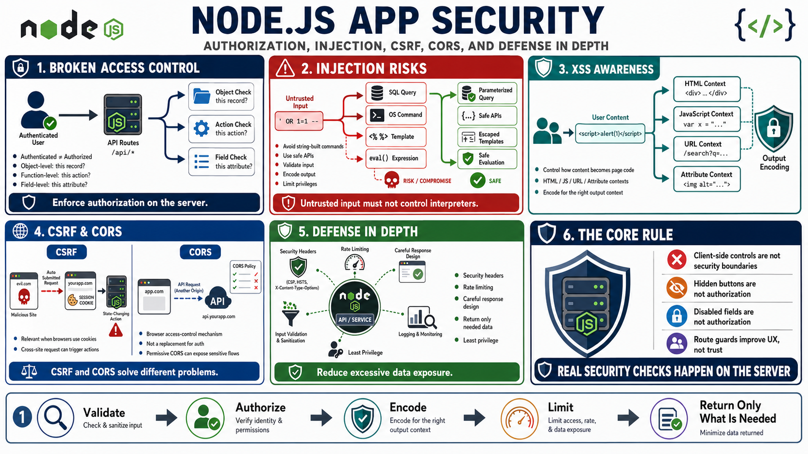

Common Web and API Security Risks
Connecting to LMS... Progress: in progress

Narration
Broken access control is one of the most important risks in Node.js APIs and web applications. A route existing behind authentication does not automatically mean every object, action, or field is authorized. Object-level authorization asks whether this caller may access this specific record. Function-level authorization asks whether this caller may perform this action. Field-level decisions may also matter when APIs expose sensitive attributes.
Injection risks appear when untrusted input influences commands, queries, templates, expressions, or downstream interpreters. The defensive pattern is to avoid string-built commands or queries, use safe APIs, validate inputs, encode outputs, and keep privileges limited. Server-rendered pages and API-backed applications also need to handle XSS risk by controlling how untrusted content becomes HTML, JavaScript, URLs, or attributes.
CSRF matters when browser cookies are used for authentication and requests can be triggered from another site. CORS is often misunderstood; it is a browser access control mechanism, not a replacement for authentication or authorization. A permissive CORS policy can create unintended browser-based access patterns, especially when combined with credentials or sensitive responses.
Security headers, rate limiting, and careful response design all support defense in depth. APIs should avoid excessive data exposure by returning only what the caller needs and is authorized to see. Most importantly, authorization must be enforced on the server. Hidden UI buttons, disabled form fields, or client-side route guards are useful for experience, but they are not security boundaries.